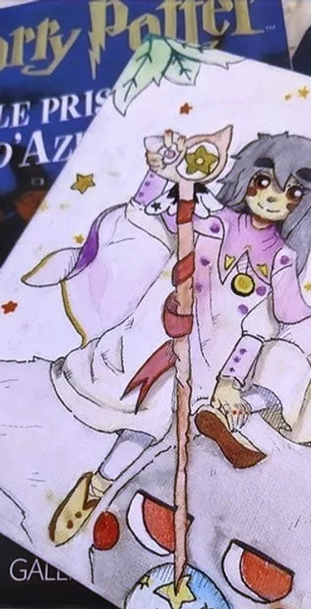

Comment concoter une Marine ?
Pour le plat :
- Une grosse poignée d’autodidacte
- Un gigot d'éclectisme dans le domaine artistique
- Une aura de persévérance pour continuer même après l'échec
- Un sirop de gameuse
- Une ribambelle d’imagination
Pour l’assaisonnement :
- Quatre à Cinq pousses de projets scolaires
- Plusieurs pincés de projets personnels
- Une bindille d'Arduino
- Une cuillère à café de langage informatique en tout genre
- Cinq morceaux de logiciel de dessin/animation/art